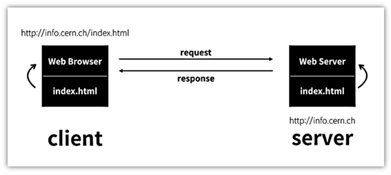

WEB의 역사
- 인터넷과 웹의 차이점
- 인터넷과 웹의 발전과정
- 인터넷이 동작하는 원리
- 웹호스팅과 웹서버
1. INTERNET vs WEB
-Internet
-
-
-
-Web
-
-
-

[예시]
Internet=도시 : Web=건물
Internet=도로 : Web=자동차
Internet=운영체제 : Web=프로그램
2. 발전과정
- 1960년 INTERNET의 등장
- 1990년 SWISS에서 WEB의 등장
1980년. 유럽 입자 물류 연구소에 '팀 버너스리'가 계약직으로 취직.
'Enquire'라는 프로그램을 개발.
결국 언어자체는 사라지게되었지만 web의 전신 중의 하나를 이루고 있음.
- 1990년 인터넷이 들어왔고 도전했던 과제들을 인터넷에 합성하기 시작.
10월. 웹페이지를 만드는 편집기를 개발
11월. World Wide Web 이라는 프로그램 개발
12월. Web server를 만들어 info.cern.ch 주소를 부여

3. 인터넷이 동작하는 원리

'팀 버너스리'는 인터넷을 이용해 웹을 만들기로 한다.
인터넷이 동작하기 위해서는 컴퓨터가 2대가 필요하며 2개의 프로그램을 개발한다.
바로 웹브라우저와 웹서버.
- 웹서버가 설치 된 컴퓨터에는 info.cern.ch라는 주소를 부여한다.
- 또 이 컴퓨터의 어떤 디렉토리에 index.html 이라는 파일을 저장한다.
- 웹브라우저가 설치 된 컴퓨터의 주소창에 http://info.cern.ch/html 이라는
주소를 입력하고 엔터를 눌렀을 때 이루어지는 과정을 보면 아래와 같다.
- 웹브라우저가 설치된 컴퓨터는 인터넷을 통해서
info.cern.ch라는 주소의 컴퓨터에 전기적 신호를 보낸다.
- 그 신호 안에는 '나는 index.html 이라는 파일의 코드를 원합니다.'
라는 의미가 담겨있으며,
- info.cern.ch에 설치된 웹서버라는 프로그램이
어떤 디렉토리에서 index.html이라는 파일을 찾게 된다.
- 그 내용을 읽어서 전기적인 신호를 바꾼 후에
웹브라우저가 설치된 컴퓨터에 신호를 보내면
- 웹브라우저가 설치된 컴퓨터에는
index.html 파일의 내용 즉 코드가 도착한다.
- 웹브라우저는 그 코드를 읽어서
웹페이지를 화면에 출력한다.
이처럼 서로 요청, 응답하여 정보를 주고받으며 인터넷이 동작한다.
4. WEB HOSTING vs WEB SERVER

-Web Hosting
여러업체를 이용해서 쉽게 이용
-Web Server
원리파악
18강